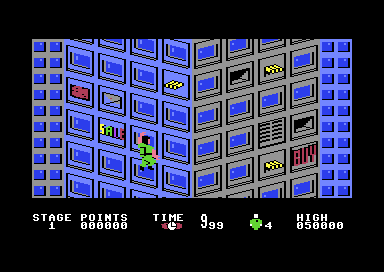
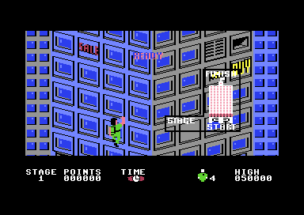
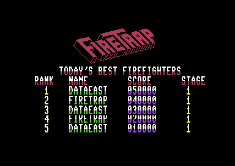

<meta charset="utf-8">
<meta name="viewport" content="width=device-width, initial-scale=1">
<title>{{title}}</title>
<link rel="preconnect" href="https://fonts.googleapis.com">
<link rel="stylesheet" href="https://fonts.googleapis.com/css2?family=Lato:wght@400;700;900&family=IBM+Plex+Mono:wght@400;500&display=swap">
<style>
:root{
  --bg:#23262d; --paper:#e9e7e1; --surface:#ffffff; --surface-2:#f1efea; --line:#d5d3cc; --line-soft:#e0ded8;
  --ink:#2f3136; --ink-soft:#55585f; --ink-mute:#80838a;
  --link:#1f5fa8; --link-hover:#154480; --accent:#1f5fa8;
  --amber:#c25a00; --cyan:#1f5fa8; --coral:#d04a3a; --green:#2a8a4a; --violet:#4a5bd6; --hl:#fff0c2;
  --chip:#2f3136; --chip-ink:#ffffff;
  --c64blue:#40318d; --c64grey:#686868;
  --fd:'Lato',system-ui,sans-serif; --fb:'Lato',system-ui,sans-serif; --fm:'IBM Plex Mono',ui-monospace,Menlo,monospace;
  --col:1080px; --gx:68px; --fs:17px; --lh:1.6; --hw:900; --h1:46px; --h2:26px; --sy:48px; --pp:26px; --r:10px;
  --plate-shadow:0 1px 2px rgba(0,0,0,.05),0 4px 14px rgba(0,0,0,.05);
}
*{box-sizing:border-box}
html{background:var(--bg);min-height:100%}
body{background:var(--paper);color:var(--ink);font-family:var(--fb);font-size:var(--fs);line-height:var(--lh);max-width:var(--col);margin:0 auto;min-height:100vh;padding:0 0 4rem}
h1,h2,h3{font-weight:var(--hw);letter-spacing:-.01em;text-wrap:balance;color:var(--ink);margin:0}
.wrap{padding:0 var(--gx)}
.hero{padding:48px var(--gx) 8px;text-align:left}
.eyebrow{font-family:var(--fm);font-size:12px;letter-spacing:.08em;text-transform:uppercase;color:var(--ink-mute);margin:0 0 10px}
.hero h1{font-size:var(--h1);line-height:1.15;letter-spacing:-.02em;margin:0 0 14px}
.hero .sub{margin:0 0 .6em;color:var(--ink-soft)}
section{padding:var(--sy) 0 24px}
section:last-of-type{border-bottom:none}
.fig{font-family:var(--fm);font-size:12px;letter-spacing:.08em;text-transform:uppercase;color:var(--ink-mute);margin:0 0 10px}
h2.t{font-size:var(--h2);margin-bottom:12px}
.lede{color:var(--ink-soft);margin:0 0 30px}
.plate{background:var(--surface);border:1px solid var(--line);border-radius:var(--r);padding:var(--pp);box-shadow:var(--plate-shadow)}
.cap{font-size:14px;color:var(--ink-mute);margin-top:14px;line-height:1.55}
.cap b{color:var(--ink);font-weight:700}
code{font-family:var(--fm);font-size:.82em;background:var(--chip);color:var(--chip-ink);border-radius:4px;padding:2px 6px;white-space:nowrap}

</style>
<!--
  Template for a game article. Keep it self-contained: inline CSS and JS,
  fonts are the only external resource, opens from disk. The section below
  shows the parts a section is made of, not which section comes first: the
  kinds of section are listed in kit/skills/core/70-minisite, in no order,
  and this page's order is its own. The best thing to press or hear goes
  as high as the explanation lets it, and every section should have
  something the reader can press. Copy follows kit/style.md and is written
  last.
-->
<!-- tabs -->
<header class="hero">
  <p class="eyebrow">{{year}} · {{publisher}}</p>
  <h1>{{title}}</h1>
  <p class="sub">A firefighter climbs a burning skyscraper, spraying water at the window fires that throw debris down at him, on a screen the program splits again and again with raster interrupts.</p>
</header>
<main class="wrap">
<section>
  <p class="fig">01 · The game</p>
  <h2 class="t">What a player sees</h2>
  <p class="lede">Source Software House's conversion of Data East's 1986 arcade game <i>Firetrap</i>, published by Electric Dreams in 1987. This page is a partial run: the game boots, its features are listed and its code is swept, and most of the program is still unexplained.</p>
  <div class="plate"><p class="cap">Stage 1 in the attract-mode demonstration. The status line shows STAGE, POINTS, TIME, lives and the HIGH score.</p></div>
  <div class="plate" style="margin-top:20px"><p class="cap">The Get Ready screen: a small map of the building with START at the foot and FINISH at the top.</p></div>
  <div class="plate" style="margin-top:20px"><p class="cap">The high-score table, five ranks of name, score and stage.</p></div>
</section>
<section>
  <p class="fig">02 · What the code shows so far</p>
  <h2 class="t">A raster-interrupt engine under a four-frame game tick</h2>
  <p class="lede">The first findings from the code.</p>
  <p>The program is one load of about 60 KB that fills nearly all of RAM. Its interrupt handler at <code>$2936</code> jumps through an address stored at <code>$2942</code>, and the common tail at <code>$2944</code> picks the next handler and raster line from a short list, flips between two copies of the list, counts frames and reads both joystick ports and the whole keyboard. The in-game list at <code>$2A88</code> has six entries, at raster lines 20, 92, 124, 155, 212 and 230.</p>
  <p>The stage loop at <code>$1336</code> runs a fixed list of routines and then waits until the frame counter has counted four frames, so the game logic ticks about 12.5 times a second on a PAL machine. The firefighter's position is held as an x position at <code>$43</code> and a 16-bit height at <code>$44</code>; the routine at <code>$16DA</code> moves him four units per tick from the joystick.</p>
  <p>Sprites are multiplexed from a table at <code>$0900</code> of four-byte records that each routine appends to, with the count in <code>$4D</code>. Window fires live in a table at <code>$0964</code> of sixteen four-byte records, falling debris at <code>$09A4</code> and the water spray at <code>$0A78</code>.</p>
</section>
</main>
<footer style="margin:16px 0 0;padding:22px var(--gx) 0;border-top:1px solid #e0ded8;font-family:'IBM Plex Mono',ui-monospace,Menlo,monospace;font-size:12px;color:#80838a"><a href="https://github.com/gamesexplained/gamesexplained" style="color:#1f5fa8;text-decoration:none">GitHub</a> · <a href="https://discord.gg/3V9GWyRDWV" style="color:#1f5fa8;text-decoration:none">Discord</a><br>© Games Explained contributors. Write-ups, facts and symbol maps are available under <a href="https://creativecommons.org/licenses/by-sa/4.0/" style="color:#1f5fa8;text-decoration:none">CC BY-SA 4.0</a>; code under <a href="https://opensource.org/licenses/MIT" style="color:#1f5fa8;text-decoration:none">MIT</a></footer>
<script>
// Inline everything. Data extracted from the snapshot goes here as arrays.
</script>
